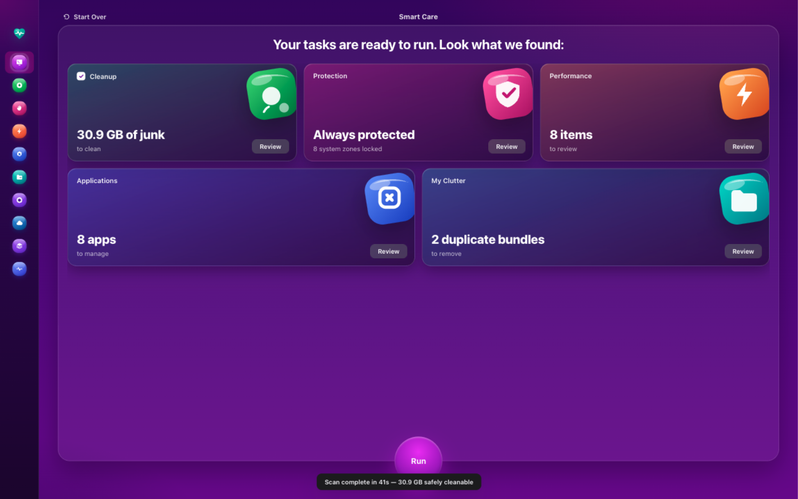
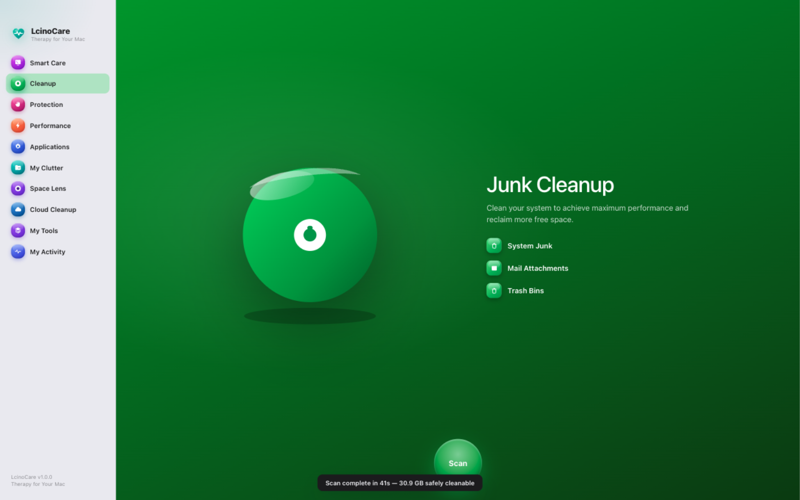
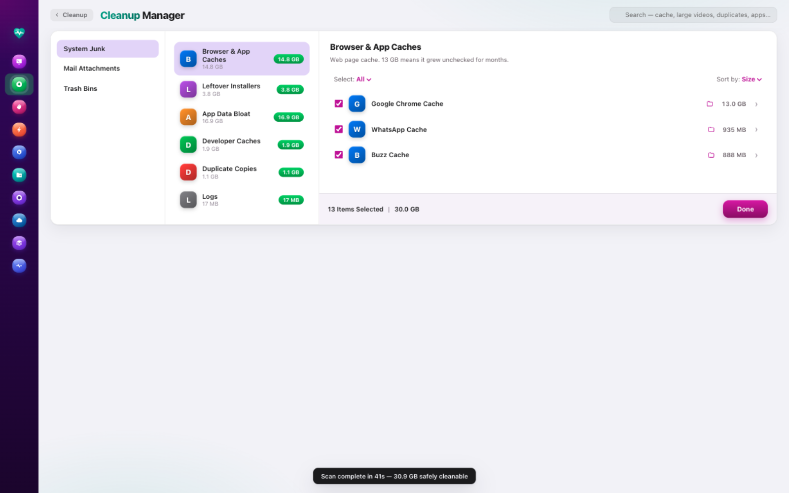
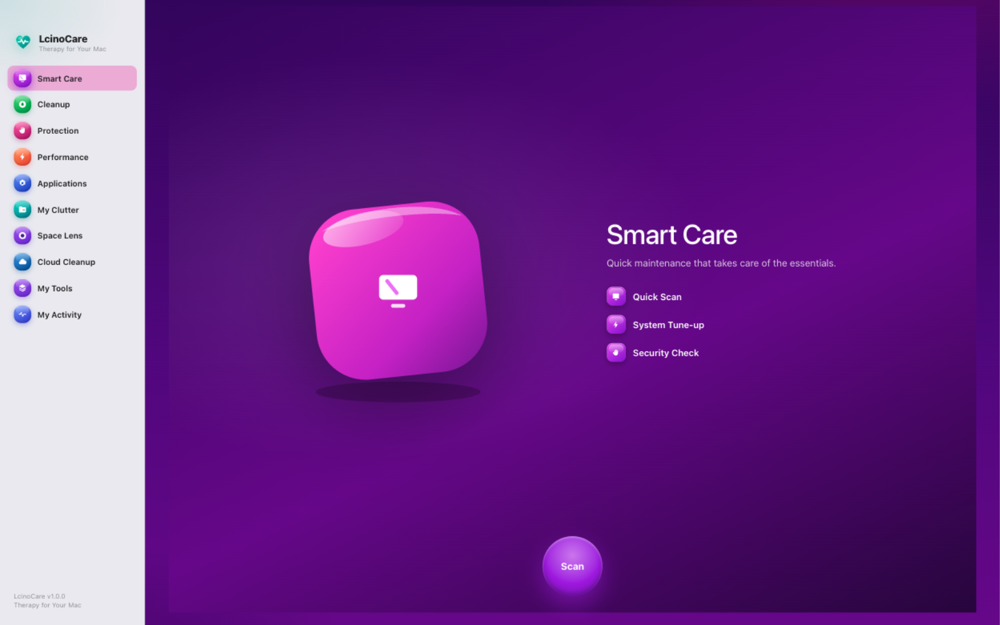
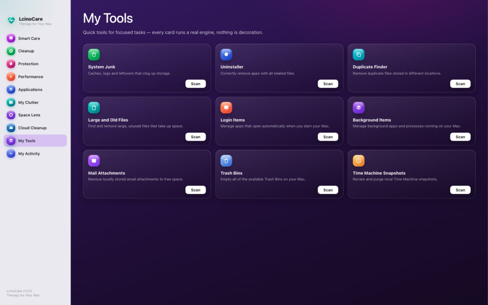
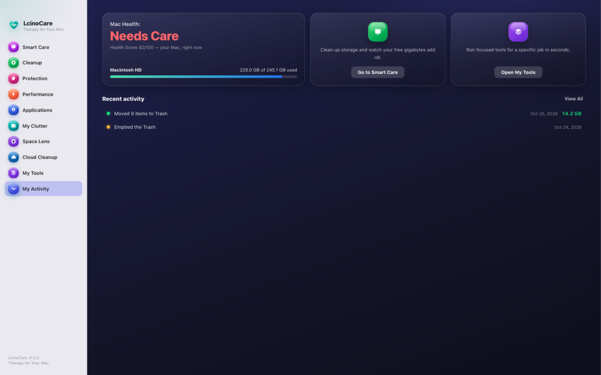

LcinoCare finds the hidden junk, guards what matters, and keeps your Mac feeling new — private, honest, and free forever. A native macOS app, built with love. Not another web wrapper.

Click through the real interface — these are live screenshots of LcinoCare 1.4.0, not mockups. Every module carries its own color, personality, and purpose.





Ten modules, nine tools, one honest app. No fake warnings, no upsell walls, no "PRO" badges on things you already have.
One scan powers every module. Review exactly what was found, tick what you trust, and run your cleanup in seconds.
System junk, mail attachments, and trash bins — each item explained in plain English: what it is, and what happens if you remove it.
No fake antivirus theatre. A hard safety blocklist guards your Keychains, system files, and irreplaceable data — always on, last-second checked.
Manage login items and background agents, and watch live, honest CPU and memory numbers — with graceful quits, never force-kills.
A real uninstaller: real app icons, sizes, install dates — and leftover detection that removes what apps leave behind.
See your entire home folder as a living bubble map. Hover, click, and discover exactly where the gigabytes hide.
Size-grouping, head-tail hashing, then full SHA-256 — only true duplicates. Plus every file over 10 MB, biggest first.
Nine focused tools — including Time Machine snapshot cleanup — and a health timeline of everything LcinoCare has ever done for you.
Most cleaners ask for trust. LcinoCare earns it — with an architecture that makes permanent damage structurally hard.
Cleaning moves everything to the Trash first. Nothing is permanently erased until you explicitly say so — twice.
Keychains, Mail data, system databases, and 8 protected zones are locked at the last possible second — inside the delete call itself.
If an app is holding a folder, LcinoCare notices, asks it to quit gracefully (⌘Q, never kill -9), and re-checks before touching anything.
No account, no analytics, no crash reporters, no servers. There is literally nowhere for your data to go — and we like it that way.
How LcinoCare stacks up against the most popular Mac care apps.
| LcinoCare | CleanMyMac | MacKeeper | OnyX | |
|---|---|---|---|---|
| Price | Free, forever | From ~$40 / year | From ~$10 / month | Free |
| Subscription required | No | Yes | Yes | No |
| Account sign-up | No | Yes | Yes | No |
| Telemetry & tracking | None at all | Analytics on | Historically controversial | None |
| Open source | Yes · MIT | No | No | Yes |
| Trash-only safe deletion | Always | Optional | Optional | — (advanced tool) |
| Every item explained in plain English | Yes | Partly | Partly | No |
| One-scan Smart Care flow | ✓ | ✓ | ✓ | — (manual) |
| Health score & activity timeline | ✓ | ✓ | — | — |
| Space lens storage map | ✓ | ✓ | — | — |
| Time Machine snapshot cleanup | ✓ | ✓ | — | — |
| Uninstaller with leftovers | ✓ | ✓ | ✓ | — |
| Dark & light themes | ✓ | ✓ | — | — |
| Ads & upsell pop-ups | Never | Upgrade nudges | Frequent | Never |
Competitor details from their public websites and pricing pages, October 2026. Prices vary by region and promotions.
The average Mac cleaner subscription costs $40–120 a year. LcinoCare is an open-source labor of love — so it costs exactly nothing.
Every module. Every tool. Every update.
No trial. No card. No catch.
macOS 13+ · Apple Silicon · 124 MB · v1.4.0
Renews annually, forever.
Billed monthly at ~$10.
Coming later: optional cloud-cleanup connectors (iCloud, Drive, Dropbox, OneDrive). They'll always be optional — the Mac app stays free.
Yes — completely. LcinoCare is open source under the MIT license. Every module, every tool, every future update is included. There is no Pro tier hiding behind this download button.
Download the .dmg, open it, and drag LcinoCare into Applications. On first launch, macOS will note the app isn't from the App Store — right-click it and choose Open once. (Proper notarization is on the roadmap.) The Mac App Store version will arrive later.
LcinoCare only ever moves items to the Trash — never permanent deletion — until you explicitly empty it. A hard blocklist locks Keychains, Mail data, system databases, and other sensitive zones inside the delete call itself. And every single item is explained: what it is, and what happens if you remove it.
No. There is no account, no analytics, no crash reporting, and no server to send anything to. Scan results and history never leave your Mac.
Any Mac with Apple Silicon (M1, M2, M3, M4) running macOS 13 Ventura or later. The app is a native 124 MB download with no bundled adware.
Cloud-cleanup connectors (iCloud, Google Drive, Dropbox, OneDrive), notarized builds with auto-update, a menu-bar widget, and scheduled scans — in that order, driven by what users actually ask for.
Join the care movement. Free, private, and made with love by LCINO.
Download for Mac